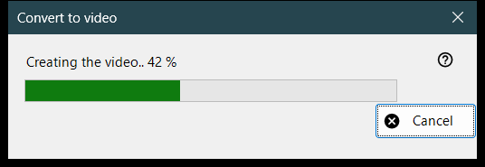
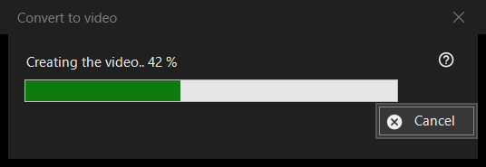

Convert to video
What this is for
The progress window of Convert to video: it turns an animated GIF, WebP or APNG into an MP4 and then deletes the original. It opens after you confirm the conversion, stays on top of the viewer until the work ends, and has one button, Cancel.


In this order
- Show an animated picture.
- Choose Convert to video.. in the picture menu, or press the Convert to video button of the toolbar; both exist only while an animation is on screen, and there is no keyboard shortcut.
- Read the confirmation and press Convert.
- If asked to download FFmpeg, answer Yes.
- Watch the bar, or press Cancel.
- The viewer opens the new MP4.
The elements
Starting the conversion
The command is offered for animations only, never for a still picture or a video, and the viewer refuses it for a protected container or a place where nothing can be written beside the file. Playback stops when the work starts.
The confirmation
It reads: the original will be converted into the new MP4, and the original is deleted permanently, bypassing the Recycle Bin. When the animation has transparency it adds: Transparency will be filled with black. Cancel is the default answer. The check box Don't ask again until the program closes only lasts until the viewer is closed; it is never saved.
FFmpeg
The conversion uses FFmpeg, which is not part of the program. If it is missing you are asked once about the download (the question shows the size; the file comes from the project site, is saved locally and is free software under the GPL). Answering No stops here and nothing is created or deleted.
The progress window
The caption reads Creating the video.. with a percentage, and the bar follows it. When the length of the animation is not known the bar just moves back and forth, with no number. Cancel, the Esc key and the close box all mean the same thing: the window stays a moment until the encoder has really stopped, then it closes and the viewer reports The conversion was cancelled. The viewer cannot be used meanwhile.
What you get
An MP4 in the same folder with the same name (a number in brackets is added if the name is taken), at the frame rate of the animation, between 1 and 50 frames per second. It is written under a temporary name and renamed when ready. The original is deleted only after the MP4 exists under its final name and has been checked to hold the whole animation. The status line says Done and the viewer shows the video.
When something goes wrong
The original stays and the status line says why: The video could not be created with the reason, the video was created but the original could not be deleted, or the video could not be checked for completeness and the original was kept. A failed run leaves the original untouched, removes the temporary file and writes details to the log.